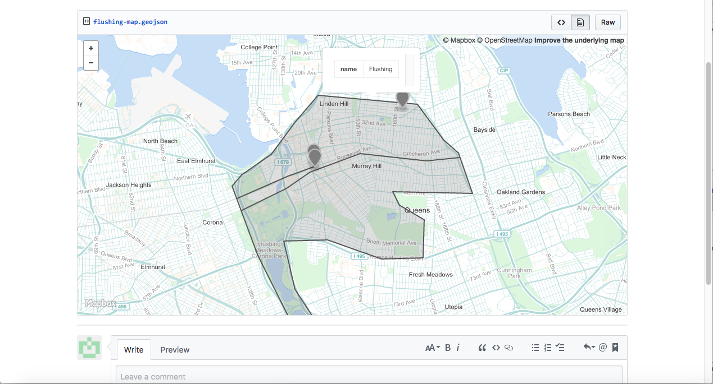

Richard's MHC 250 Site
I'm hosted with GitHub Pages.

Basic demographics & statistics:
Neighborhood Flushing, Queens
Zip codes: 11354, 11355, 11357, 11358
Census tracts (estimated): 0869.00 0889.01 1161.00 1159.00 1157.00 1155.00 1151.00 1167.00 1133.00 0865.00 0863.00 0855.00 0871.00 0849.00 0853.00 0857.00 1187.00 1189.00 1201.00 1205.00 1203.00 0845.00 1205.00 0797.01 0797.02 0849.00 0871.00
Distance from:
- Federal Hall: 10.09 mi
- Empire State Building: 8.2 mi
Population size: 69,382
Population density: 84.4 persons per acre
Age structure:
- >18 10,917
- 18-65 47,451
- ≥65 11,014
Birth rate (QCD7): 12 per 1,000
Death rate (QCD7): 6.5 per 1,000
Top ten for parking tickets (by licence plate)
- License plate 12359MG received 572 tickets.
- License plate 62630JM received 408 tickets.
- License plate 42930JM received 382 tickets.
- License plate 27549JX received 381 tickets.
- License plate 56222MG received 347 tickets.
- License plate 66788ME received 340 tickets.
- License plate 18413JU received 334 tickets.
- License plate 92815JE received 270 tickets.
- License plate BLANKPLATE received 248 tickets.
- License plate 63547MC received 242 tickets.
The most common 311 complaints received in Flushing were:
- Blocked Driveway with 19275 complaints
- Street Condition with 17996 complaints
- Noise - Residential with 14177 complaints
- Street Light Condition with 13041 complaints
- Damaged Tree with 10184 complaints
- Illegal Parking with 9804 complaints
- HEATING with 9797 complaints
- Water System with 8531 complaints
- Building/Use with 8253 complaints
- HEAT/HOT WATER with 7959 complaints